Agrisisters in Action
Real women. Real farms. Real impact through climate-smart agriculture.
 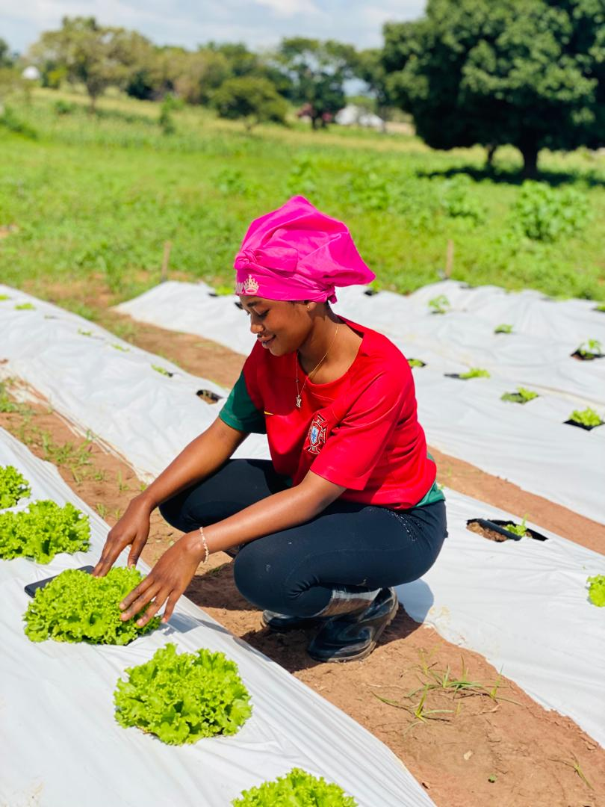
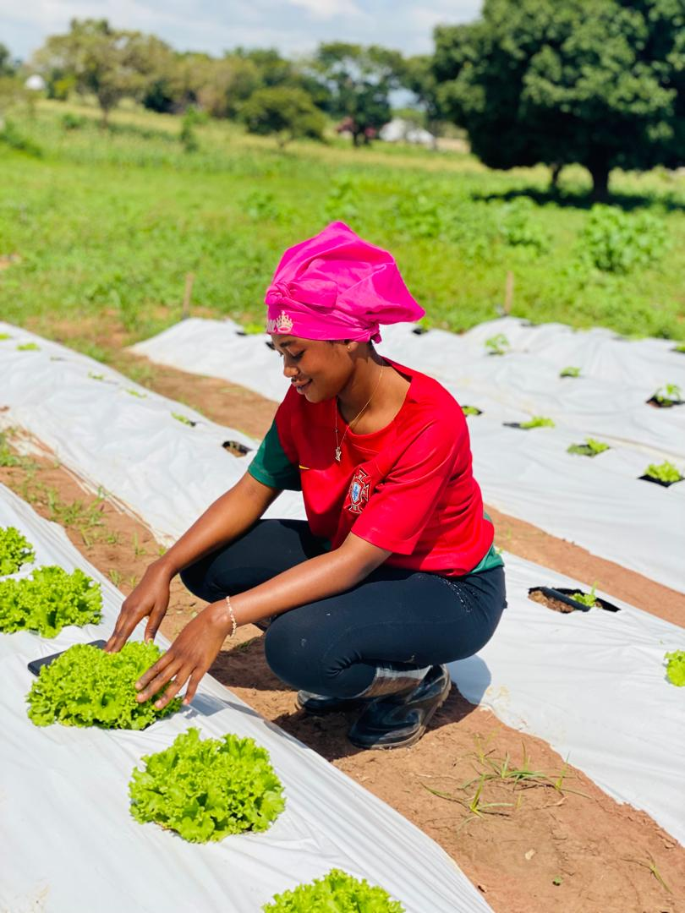
 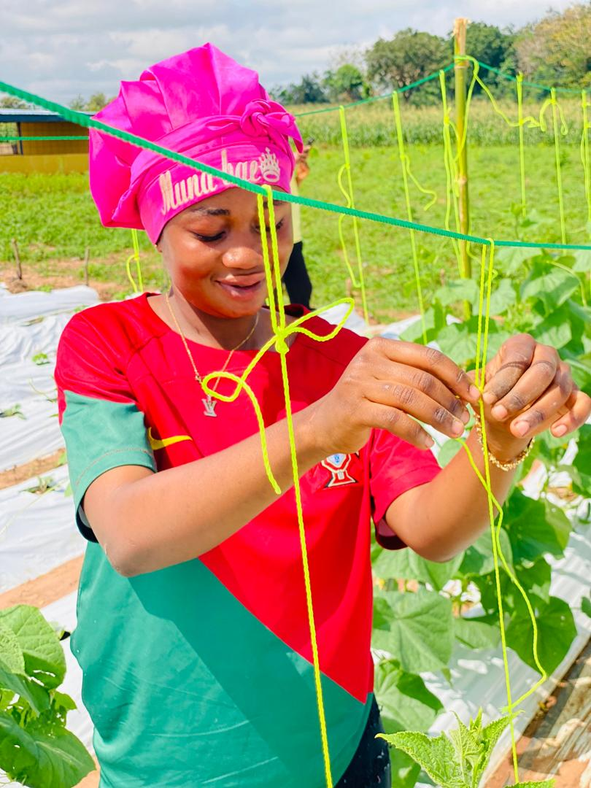
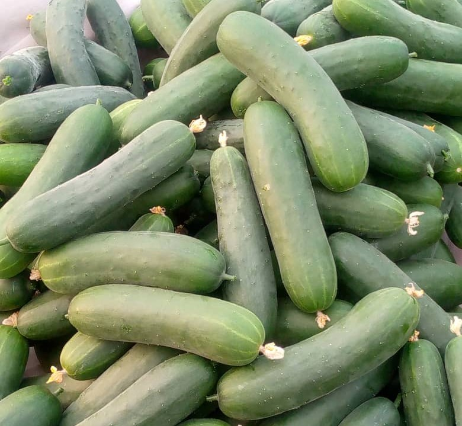
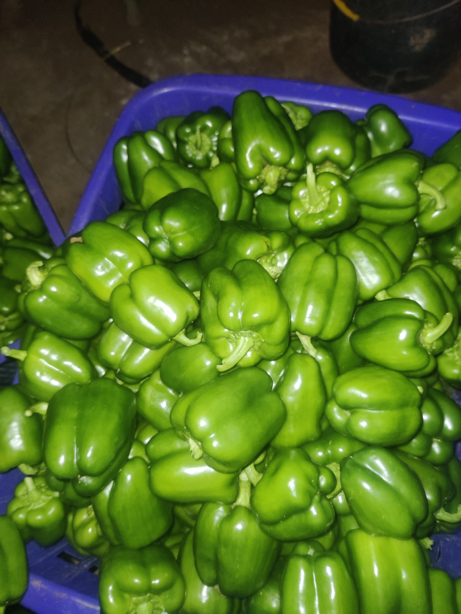
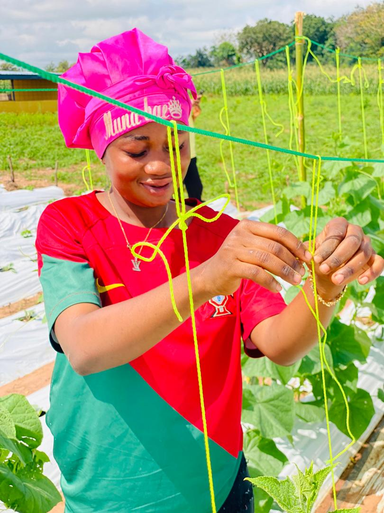
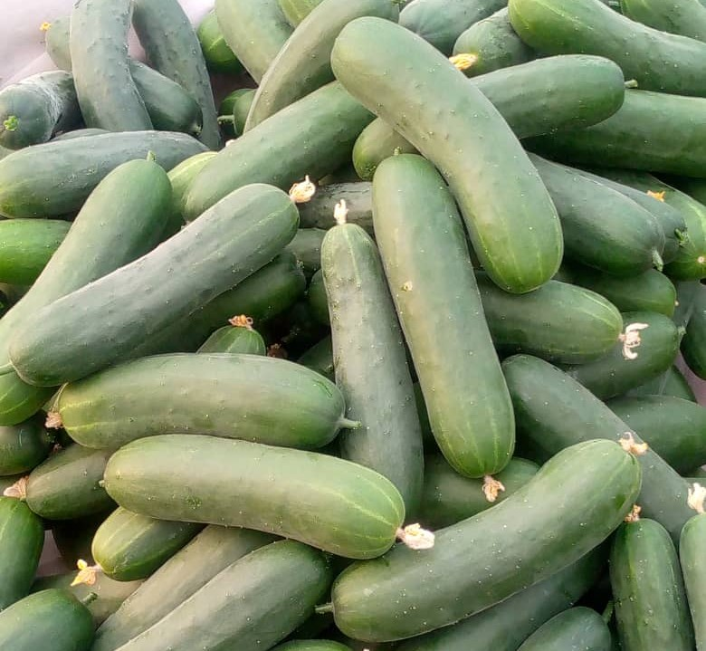
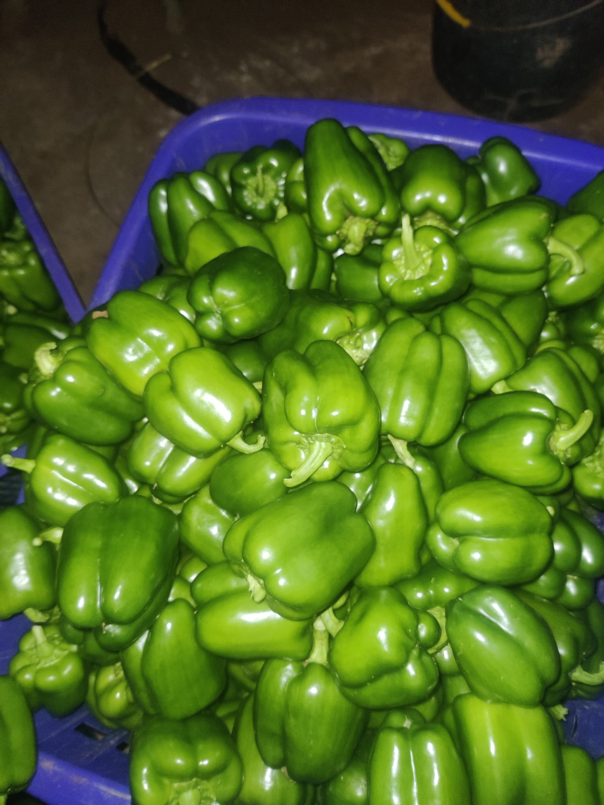
Young women in rural Ghana face persistent structural barriers to dignified work in agriculture, including limited access to land, finance, and productive assets, even after acquiring relevant skills. While Yava Farms has invested in climate-smart irrigation and built a pipeline of skilled young women trainees, both physical infrastructure and human capital remain underutilized due to gaps in inclusive financing and market-linked production models. Addressing these systemic constraints is critical to enabling youth-led agribusinesses, improving productivity, and driving sustainable, inclusive economic transformation. This challenge presents a unique opportunity to simultaneously unlock underutilized agricultural infrastructure and empower skilled young women with pathways to dignified, income-generating work. By intentionally connecting trained female youth to irrigated land, inputs, mentorship, and guaranteed markets, Yava Farms can transform existing constraints into a scalable, inclusive agribusiness model. The AgriSisters Program is designed to address this gap by aligning assets, skills, and markets to create sustainable women-led agribusiness enterprises.
Agrisisters responds directly to climate change, youth unemployment, rural poverty, and gender inequality in agriculture.
Women form the backbone of Ghana’s food system yet face systemic barriers.
Sustainable practices that increase yields while protecting resources.
Reliable incomes and economic independence for women.
Support hundreds of rural women farmers.
Increase nutritious local food supply.
Real women. Real farms. Real impact through climate-smart agriculture.
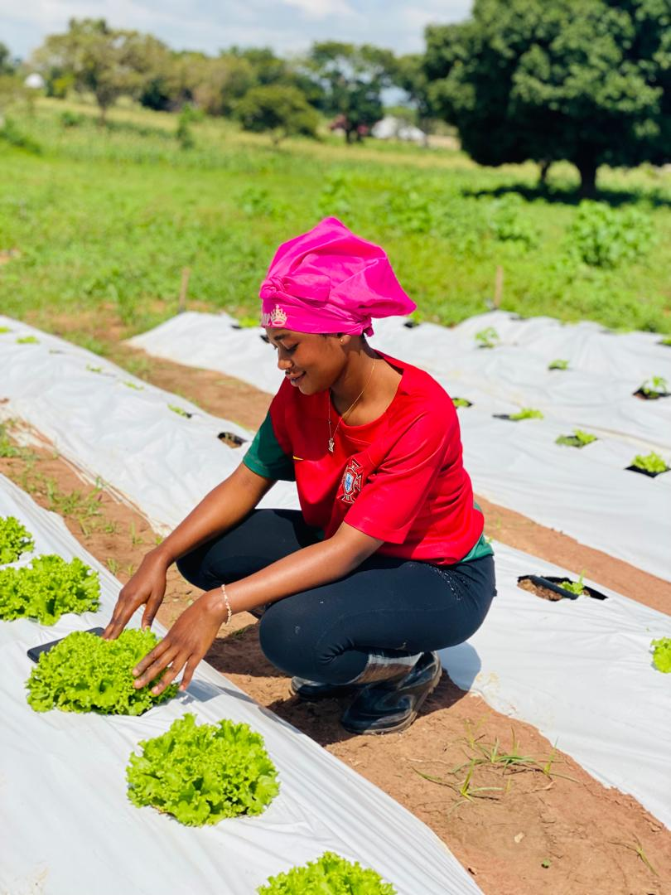
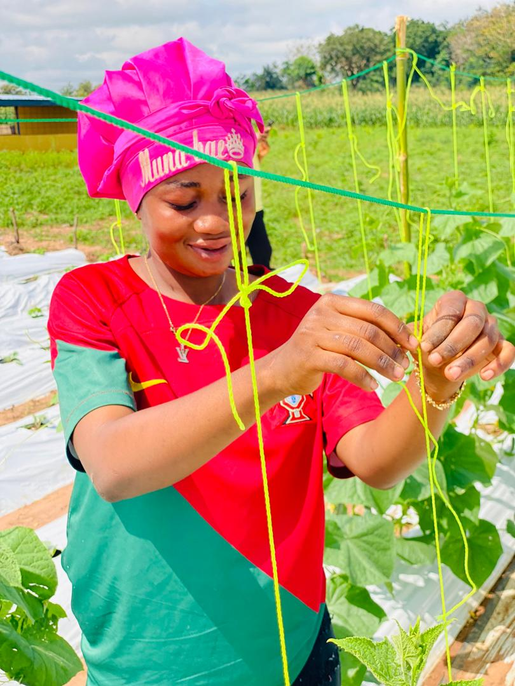
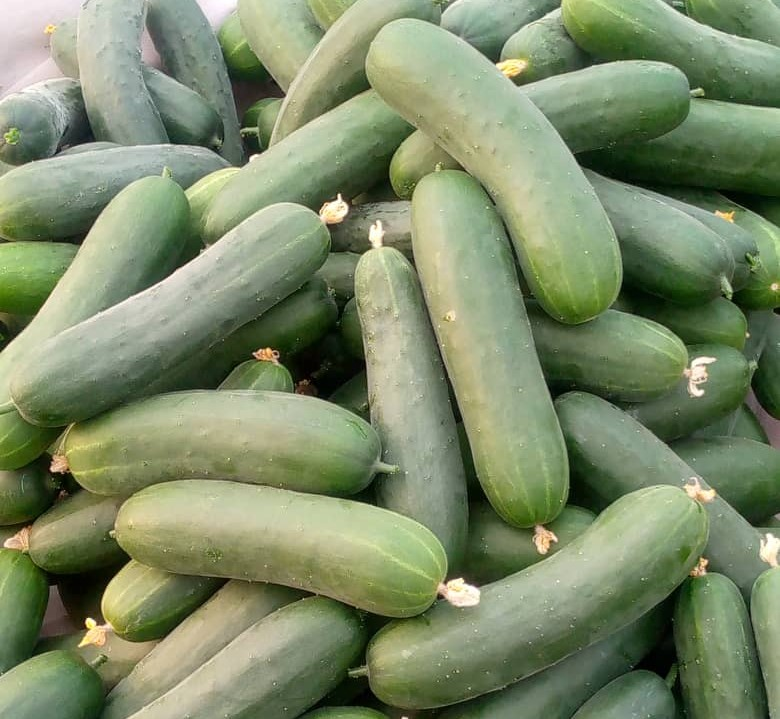
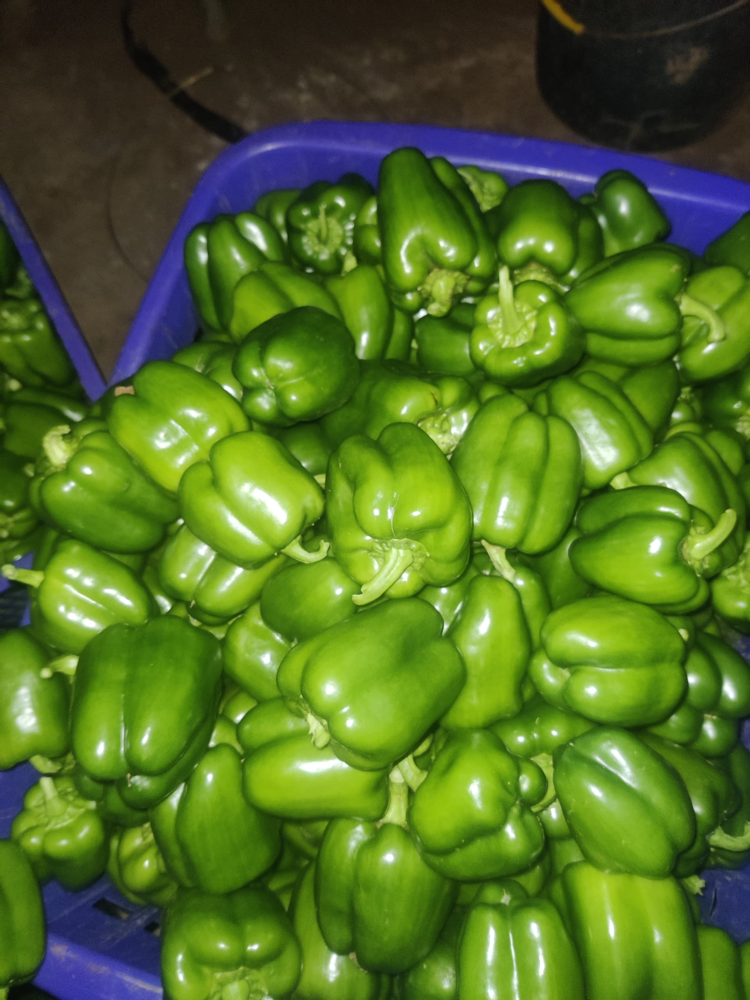
Fund field setup, farm tools & equipment, inputs and trainings.
We welcome partnerships with donors and development agencies.
Interested in supporting?
Download Our Pitch Deck Become a PartnerBank: National Investment Bank
Account Name: Yava Farms & Agricultural Consultancy
Account Number: 1124092119501
Branch: Wenchi